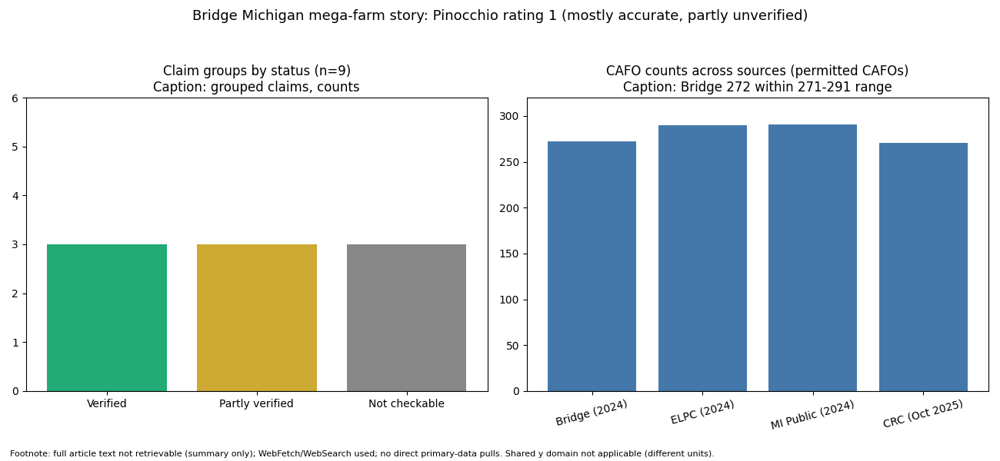

Fact check: Michigan mega-farms
Largely accurate; one Pinocchio, with the 75% impairment and 420M gallon figures unverified
The Nov 19, 2026 Bridge piece (Kelly House) holds up where checkable: its 272 largest CAFOs (2024) sits within the 271-291 range other sources give, and the 2020 permit, Farm Bureau litigation and June 2026 ruling with cross-appeals are corroborated by Michigan Advance. Rating: 1 Pinocchio.

- Limit: I only received a summary of the article, not full text; quotes (Borrello, Jelenek) could not be verified against the original.
- Not checkable here: 1.1M tons / 3.93B gallons waste, Gratiot 420M gallons, three-quarters of rivers above waste standards (EGLE Integrated Report not found), 3,450-head CAFO approval (The New Lede Aug 2026 reports a dairy CAFO approval; size unverified).
- Possibly misleading: causation between CAFOs and impairment is contested (septic, other sources); article notes this.
- Permit start date "2005" not independently verified.
Sources
- https://bridgemi.com/michigan-environment-watch/mega-farms-are-booming-in-michigan-drowning-rivers-in-manure/
- https://michiganadvance.com/2026/06/12/michigan-court-strikes-down-parts-of-contested-livestock-waste-permit/
- https://michiganadvance.com/2026/05/19/farms-and-agriculture-groups-call-foul-over-egle-permit-restricting-animal-waste-uses/
- https://law.justia.com/cases/michigan/supreme-court/2024/165166.html
- https://elpc.org/wp-content/uploads/2023/03/ELPC_CAFO-Report_2024.pdf
- https://crcmich.org/cafopermitting_dennis_20251001
- https://www.thenewlede.org/2026/08/michigan-cafo-dairy-manure-pollution-water/